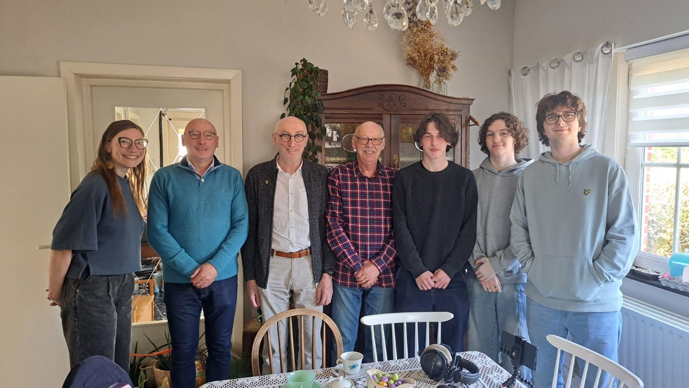

Echo's van het verzet
Welkom op onze website.
Deze website, dit project, maakten we in functie van de Vlaamse Geschiedenisolympiade 2025. Met het thema ‘Overal geschiedenis. Ik zie wat jij niet ziet’, prikkelden zij onze nieuwsgierigheid naar het verzet tijdens de Tweede Wereldoorlog. Na wat opzoekwerk kwamen we uit bij 1 vrouw specifiek: Sylvie Bollen. Zij voerde tijdens de Tweede wereldoorlog verzet tegen de Duitse bezetter in Lommel, de stad waar onze school ook ligt. Voor meer informatie over haar leven en daden, kan je de pagina genaamd ‘Sylvie’ bezoeken. Onze nieuwsgierigheid naar de daden van Sylvie, veranderde al snel naar nieuwsgierigheid over de impact van haar daden op haar kinderen. Deze echo’s van haar daden, kan je vinden op de pagina ‘De echo’s’. Heeft u een eigen verhaal, dat u graag wil delen, kan u daarmee terecht op ons forum. Indien wij uw verhaal goedkeuren, dat wil zeggen dat wij het als relevant voor het thema bestempelen, verschijnt uw verhaal op onze vertelpagina. Op de pagina ‘partners’ vindt u alle partners die ons geholpen hebben om dit project te realiseren.
